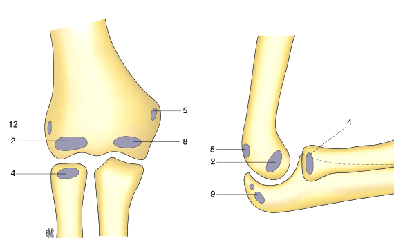
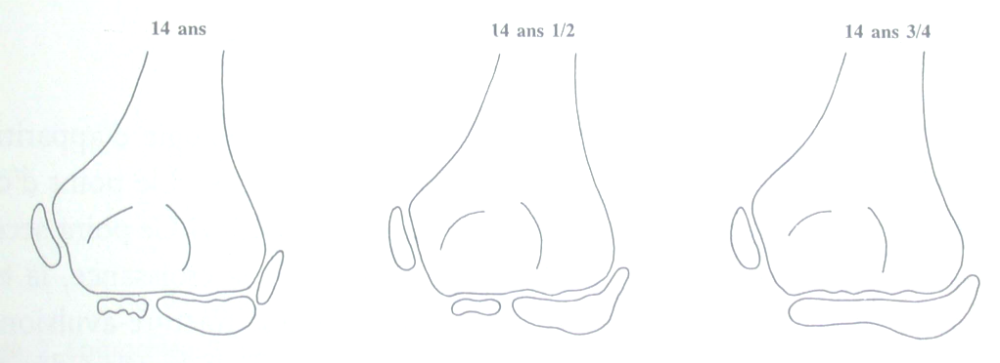

Ossification du membre supérieur
La présence de plusieurs points d’ossification dans la matrice cartilagineuse épiphysaire rend le diagnostic des fractures de l’enfant difficile. Prenons comme exemple le coude, où seules les métaphyses sont ossifiées, à la naissance, et successivement apparaissent à son niveau 6 noyaux d'ossification selon la règle "CRITOE" (fig12)
6m-2a: C : capitellum (2)
3a-6a: R : radial head (4)
5a-7a: I : internal epicondyle (5)
7a-10a: T : trochlea (8)
8a-10a: O : olecranon (9)
11a-12a: E: external epicondyle (12)
Premièrement: l'épicondyle externe, le capitellum et la trochlée fusionnent pour donner un centre d'ossification unique (E+C+T = ECT)
Deuxièmement: ce centre ECT fusionne avec la métaphyse
Troisièmement: l'épicondyle interne se fusionne tardivement (17 ans chez le garçon, 14 ans chez la fille)
 |
Ces noyaux d’ossification fusionnent selon un ordre spécifique, qu’on décrit comme suit: (fig13)
 |